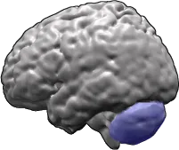
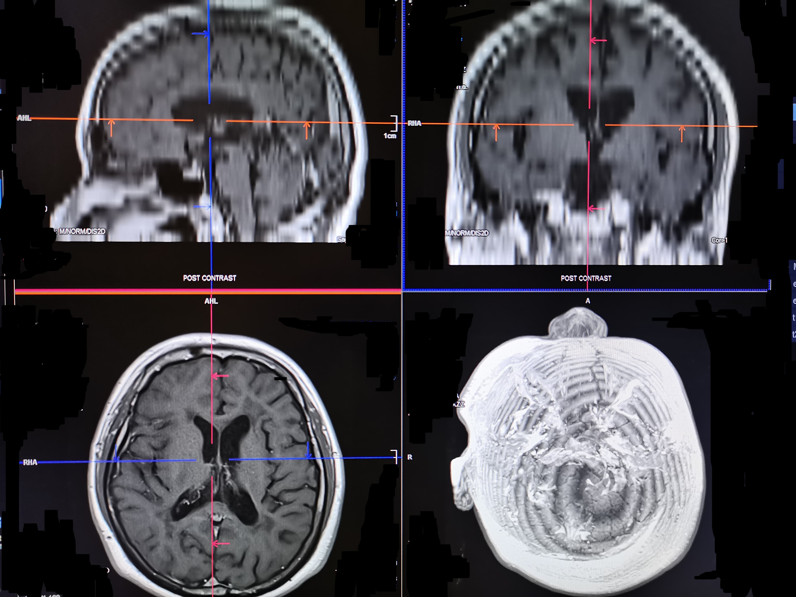

Toca o haz clic en cualquier zona del cerebro para explorar
Arrastra · Rueda = zoom · Pellizca en móvil
🔬 Real

Vista lateral del hemisferio cerebral humano · Wikimedia Commons
🧲 MRI

Resonancia magnética — corte axial · NIH